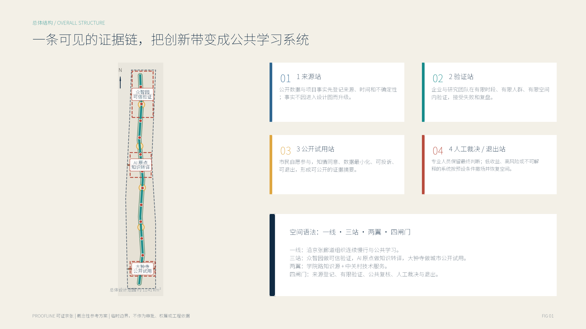
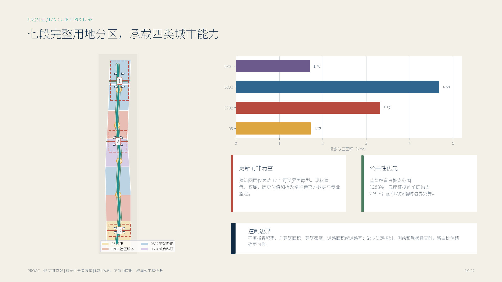
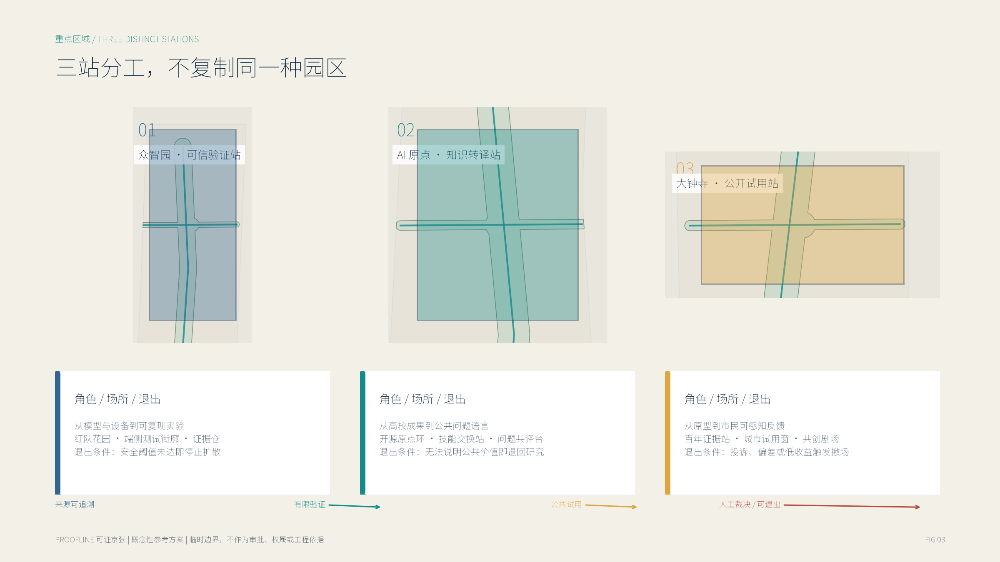
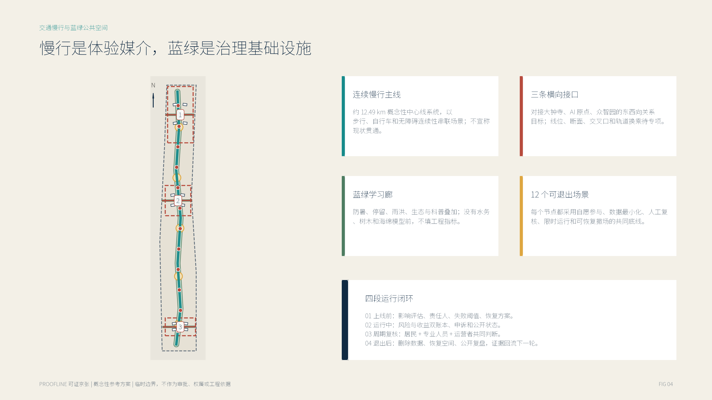
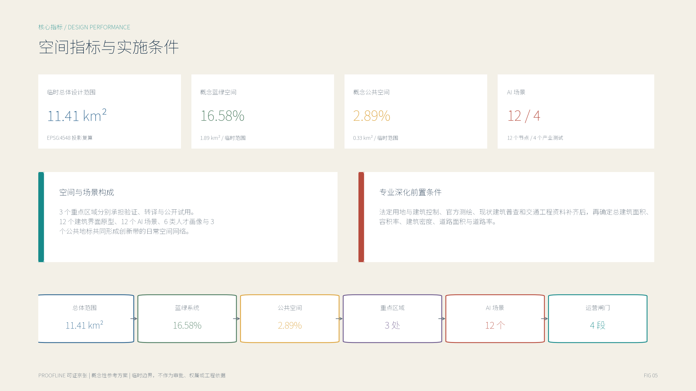

百年京张 AI 创新带城市设计开源征集
可证京张 PROOFLINE
可验证、可退出、可共治的 AI 城市创新带。把模型与产品从“来源登记”送入“有限验证”，再进入“公共试用”，最后交还“人工裁决与退出”。
一线 · 三站 · 两翼 · 四闸门概念性参考方案核心指标
临时总体设计范围11.41 km²投影复算
蓝绿公共空间16.58%概念方案
五座证据站前庭2.89%概念方案
AI 场景12 / 4总节点 / 产业测试
总览地图 · 三层范围

三层范围：统筹研究范围提供关系框架，总体设计范围承载概念分区，重点区域分别承担验证、转译与公开试用。
统筹研究
学院路知识源、中关村技术服务翼、京张遗产叙事与区域慢行关系。
总体设计
约 11.41 km² 临时范围内形成连续证据链和七段概念分区。
重点区域
众智园、AI 原点、大钟寺边界均为临时粗略范围，不作为权属或审批依据。
用地分区 · 建筑 · 更新项目

七段分区完整覆盖临时范围；12 个建筑图形仅表达可逆更新界面，不代表现状建筑、拆改留判断或规模许可。
重点区域

三站不复制同一种园区：众智园验证、AI 原点转译、大钟寺公开试用。
交通慢行 · 蓝绿公共空间 · AI 场景

线路是关系目标而非现状或工程线位；12 个场景都绑定自愿参与、人工复核与退出机制。
四闸门
01 来源
事实、出处、时间、不确定性一起登记。
02 有限验证
限定空间、人群、周期和失败阈值。
03 公共试用
知情、自愿、最小化收集、可投诉。
04 裁决与退出
人工保留最终判断，撤场后恢复并复盘。
空间指标与实施条件

核心空间指标、场景规模与专业深化前置条件一览。
来源
14 项记录覆盖征集文件、仓库事实包、边界说明与 7 个国际案例；外部案例只作机制启发。
假设
边界、法定控制、现状建筑、交通、遗产、市政、案例迁移、治理与分期共 9 类条件均有登记。
技术附件：任务覆盖与自检状态
正文与数据包覆盖征集任务、设计深度和专业标准；页面与图件由同一组 GeoJSON 和 metrics.json 生成。